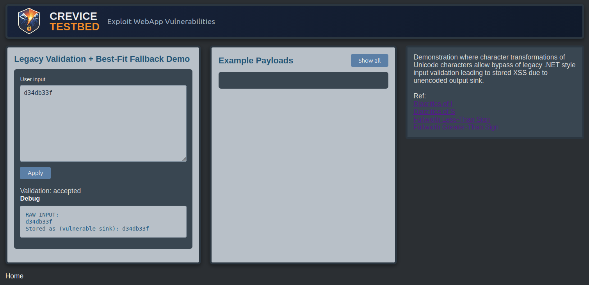
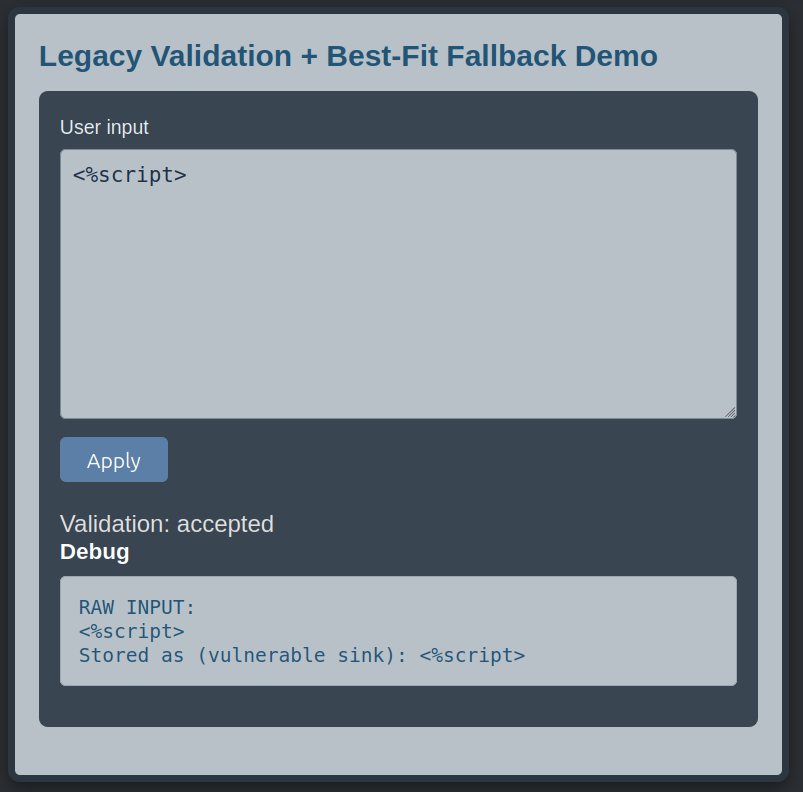
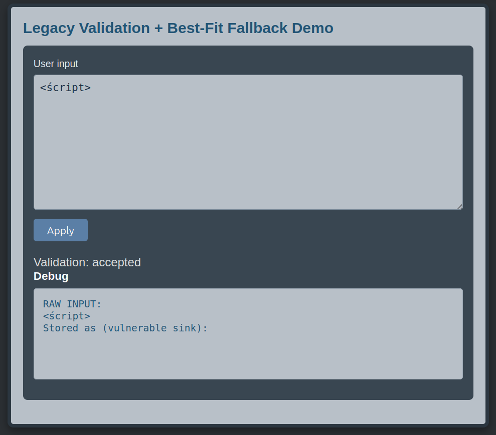
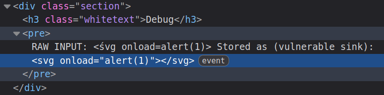
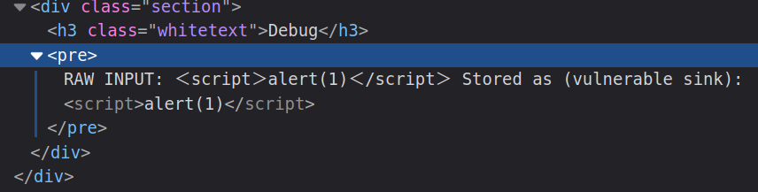
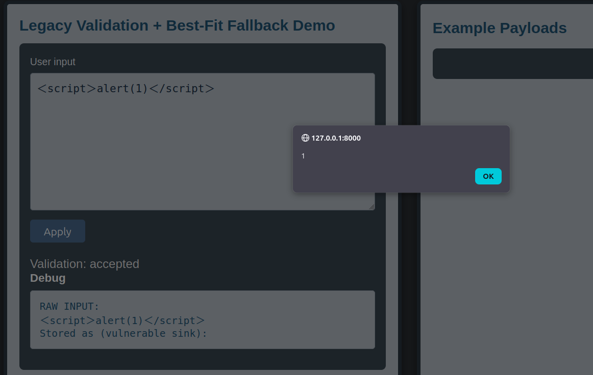

Unicode Best-Fit XSS BypassStored XSS Through Legacy Request Validation Bypass and Unicode Normalization

Summary
This Crevice Testbed lab demonstrates how legacy-style request validation can be bypassed when Unicode characters are normalized to their nearest ASCII equivalent before reaching an XSS sink. The application rejects obviously dangerous input like <svg>, but accepts variants that look harmless enough to limp past validation. Once those characters are normalized by the application stack or database handling, they become the exact dangerous characters the validator was trying to stop in the first place.
That’s the problem with relying on input validation alone. The developer blocked some known-bad patterns at the front door, assumed the job was done, and skipped context-specific output encoding when the data was rendered later. Microsoft has recommended treating validation and output encoding as separate controls for a long time. This lab shows why. One tries to reduce bad input. The other keeps surviving input from becoming executable. You want both. Betting everything on the first one is how weird Unicode turns into script execution.
Lab Objectives
- Confirm that a basic
<script>tag is rejected by legacy request validation - Show that
<%script>is accepted despite still behaving like tag input - Inspect the DOM and confirm injected markup reaches the page
- Test whether Unicode normalization converts diacritic characters into standard ASCII equivalents
- Use full-width Unicode angle brackets to bypass validation and achieve JavaScript execution
- Observe that missing output encoding is what turns the validation bypass into actual XSS
Technical Walkthrough
The lab begins with a simple input test where the user checks for basic reflection using a string d34db33f and observes the reflection. Testing further, they enter a basic <script> tag and submit it.
The application rejects the input and returns the message Rejected by legacy request validation. At a glance, that looks reassuring. The server appears to recognize obvious tag input and block it before it reaches the page.

Next, slightly modify the input and submit <%script> instead.
This time the input is accepted. This matters because it shows the filter pattern matching against a narrower idea of what dangerous input looks like. The application isn’t reasoning about how the data might later be transformed. It’s just rejecting what it recognizes and waving through what it doesn’t.

The filter has been bypassed but the element isn't rendered as HTML as can be observed in the vulnerable sink where input is visible in the UI.
The next step is to test Unicode characters that may be normalized into ordinary ASCII letters. Use a payload like <śvg> and observe what happens after the value is processed and rendered.

The injected content appears in the DOM and breaks the rest of the app, which confirms that special characters capable of shaping markup are reaching the rendered page. Even though the original payload doesn’t execute, the application has already shown its hand. User-controlled input is getting inserted into an HTML context without being safely encoded for that context.
The important detail here is that the ś character can be transformed into a standard S during best-fit or compatibility-style normalization. That means input that doesn’t look like <script> to the validator may still become <script> by the time the browser receives it. The validator inspects one form of the data. The server returns another. Then the browser renders and executes it. That’s not a great arrangement.
The following can be used to bypass input validation and will be normalized before being returned to the vulnerable sink: <śvg onload=alert(1)>

Note that this other payload would also be transformed and successfully execute:
<ímg src=1 onerror=alert(1)>
This is the key moment in the lab. The validator didn’t stop the payload because the dangerous form of the input didn’t exist yet. It only came into existence after later processing normalized the characters into their ASCII equivalents. And because the application rendered the resulting data into HTML without output encoding, execution followed naturally.
There is more to discover though.
After confirming that letter normalization occurs, try full-width angle brackets. Submit the following:＜script＞alert(1)＜/script＞
These full-width Unicode characters aren’t the standard ASCII < and > characters the legacy validator expects. Because of that, the payload is accepted. But after normalization, the full-width brackets are converted into ordinary angle brackets, producing a real script tag and bypassing the check on closing tags that prevented the earlier PoC from executing.
At that point the browser does what browsers do. The payload executes . . .

Happily.

The Logic Failure
The root problem isn’t just that legacy request validation missed a few Unicode tricks. The deeper problem is that the application trusted input validation to carry the full security burden for HTML rendering.
It's useful for validation to reject known-bad patterns. But validation is always operating on a guess about what dangerous input will look like at the moment it inspects it, and better used for business logic than security. Once later processing changes the data through normalization, transformation, decoding, or storage behavior, that guess can become wrong very quickly.
That’s what happens here.
The failure sequence looks like this:
- Legacy request validation blocks only obvious dangerous patterns
- Slightly altered tag-like input is allowed through
- Unicode characters survive input validation
- Application or database-layer normalization converts them to ASCII equivalents
- The resulting value is rendered into HTML without context-specific output encoding
- Browser-executable markup is created and JavaScript runs
The validator looked at one version of the input. The browser received another. And because the final output wasn’t encoded for the HTML context, the application turned normalization behavior into an exploit path.
What makes this class of issue especially annoying is that those transformations may come from more than one place. Sometimes the behavior comes from legacy .NET handling. Sometimes it comes from database configuration, collation, or character-conversion behavior. Sometimes it’s a combination of both, which means the dangerous transformation doesn’t live neatly in one obvious layer of the stack. That can make the bug harder to trace and harder to fully eliminate through configuration or validation changes alone.
That’s exactly why output encoding is essential. Even when upstream validation is imperfect, inconsistent, or working against transformations introduced elsewhere, proper context-specific output encoding still prevents the browser from treating the final value as executable markup. Validation may reduce bad input. Output encoding is what keeps surviving input from becoming a problem.
A safer design would assume that validation is only one control in the chain, not the whole plan:
- Treat Unicode and normalization behavior as part of the attack surface
- Avoid relying on blacklist-style request validation as the primary XSS defense
- Assume stored input may change form before display, even if it looked harmless at submission time
- Validate input for business rules, but encode all output for the context where it appears in the DOM
- Apply context-specific output encoding whenever user-controlled data is rendered into HTML
Otherwise you’re trusting every upstream transformation layer to behave exactly how your validator imagined. That’s optimistic in a way security work rarely rewards.
Key Takeaways
- Input validation alone isn’t a reliable XSS defense
- Unicode normalization can change apparently safe input into dangerous markup later in the processing chain
- Legacy validation logic often inspects only obvious ASCII forms of dangerous input
- Those transformations may come from legacy .NET behavior, database configuration, or both
- That makes this class of issue harder to trace and not always easy to fix in one place
- If user-controlled data is rendered into HTML without output encoding, bypassing validation may be all an attacker needs
- Stored input should be evaluated based on how it’s rendered, not just how it looked when it was submitted
- Microsoft’s recommendation to pair validation with context-specific output encoding exists for a reason
- When multiple layers can transform input, output encoding becomes the stopgap, defense-in-depth control you really can't skip